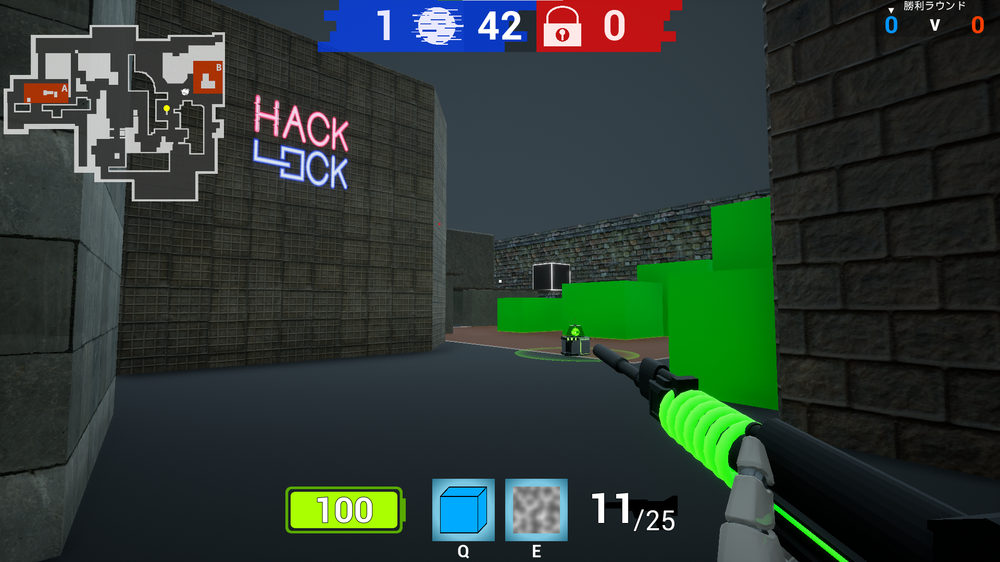
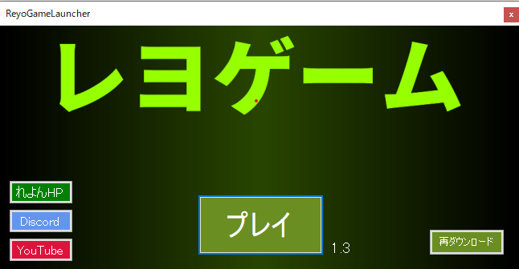

オンラインで遊ぶためにはゲーム起動時にSteamを起動してログインしている必要があります
ランチャーをダウンロード爆破系FPS「ハックロック」、だるまさんがころんだ、イカゲームのパロディゲームなど、これ1つでれよん作の様々なゲームで遊べます

↑爆破系FPS「ハックロック」
アップデートができるランチャー式なので、1度ダウンロードすればゲームにアップデートが入っても、ランチャーのボタン一つで自動的にアップデートされます

不具合が起きたときはランチャー内の「再ダウンロード」ボタンを押すかランチャー再ダウンロードを試してください